全站购买按钮统一 · 改前 / 改后
购物车、侧边购物车、黑五卡片、套装弹窗、Setup Kit、联合推广的按钮统一成产品页加购按钮的样子（黄底黑字、Geist 12px 全大写、字距 0.12em、圆角 8px、鼠标移上去黑色划过）。Check out 去掉锁图标；Continue shopping 改白底黑框；卡片上的小购物车图标平时灰底深色图标、移上去变黄、加好变黑。
一、购物车
购物车页 Check out
去掉锁图标，全大写细字；高度保留 54px。鼠标移上去黑色划过。
改前
改后
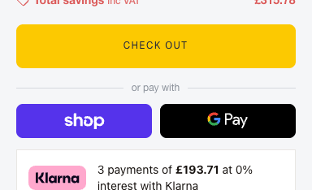
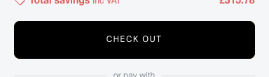
侧边购物车 View full cart
改前
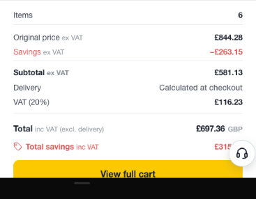
改后
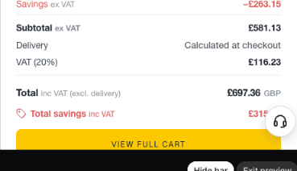
手机购物车底部悬浮条 · 购物车空时 Continue shopping


购物车页订单汇总下的「Continue shopping」（11/18 上线后补改）
第一次上线漏了这个（它和空购物车的那个不是同一个按钮）：原来粗体、1.5px 灰框。现在 Geist 全大写、白底黑框、鼠标移上去划黑，保留返回箭头。窄屏时顶部的小圆角按钮同样改了。
改前（你的截图）
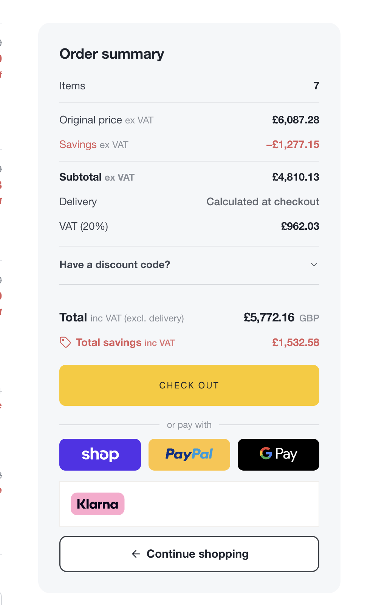
改后

鼠标移上去
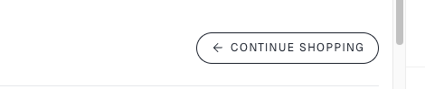
窄屏顶部的小按钮
二、商品卡片小图标
合集 / 搜索 / Shop Similar / 购物车推荐 / 黑五网格的圆形购物车图标
平时保持原来的灰底灰图标（11/18 按你的意见：深色线太重，已改回灰色），鼠标移上去变黄，加进购物车后变黑。
改前
改后
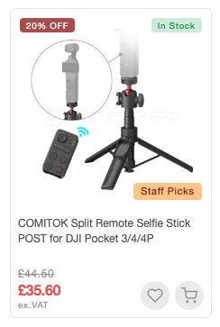
鼠标移上去
产品页 Recommended Accessories 图标
原来是另一种深一点的灰，现在和上面统一。
改前
改后
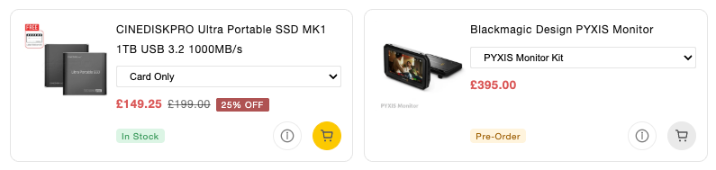
鼠标移上去（左边那个）
三、其他文字按钮
黑五 Top Deals 卡片 Add to cart
原来 #ffcc00 + 14px 特粗；现在和全站一样。高度按卡片保留 42px。
改前
改后
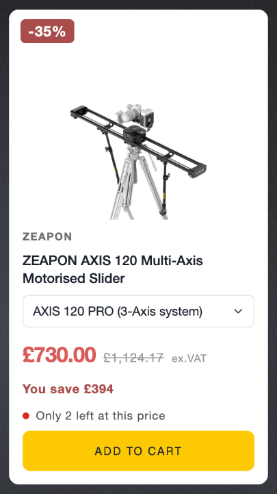
鼠标移上去
套装弹窗 Add to cart（搜索 / 合集卡片上点「N Bundles」打开）
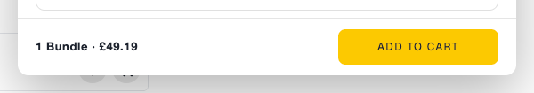

Setup Kit「Add selected to cart」、联合推广卡片按钮
正式店上目前没有产品开着这两个模块，按代码一起统一，以后打开就是同一个样子。
三½、第二轮补漏（收藏夹 app、首页商品列表、到货提醒、联合推广）
收藏夹页面（/pages/wish-list）
Add to cart 和「Add all in stock to cart」都是买，改成黄色统一样式（原来 Add all 是白底黑框）；Notify me、排序筛选、Remove 等不是买的，改成白底黑框，字体一样。
改前
改后
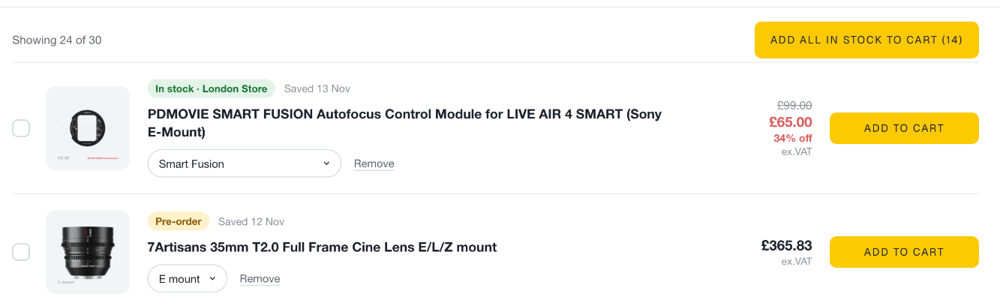
改前 · 卖完的商品
改后 · 卖完的商品
购物车页「Saved for later」（收藏夹 app 放在购物车下面的）
Move to cart 改黄色；Notify me 白底黑框。你现在没有存起来的商品，截图里的两行是预览用的示例（没动你的数据）。
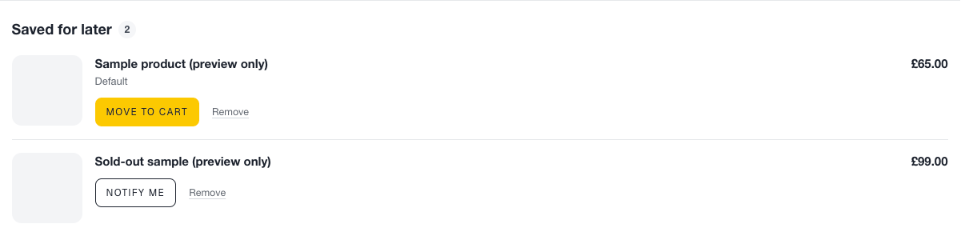
到货提醒「Notify me when available」（产品卖完时出现）
原来深灰底白字 Arial，和网站其他地方都不一样；改成白底黑框（不是买的动作，所以不用黄色），字体统一。
改前
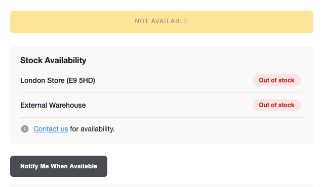
改后
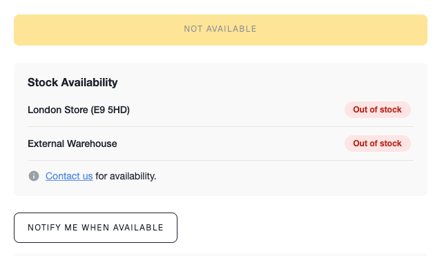
首页商品列表的圆形购物车图标（还有部分活动页的推广卡片）
第一轮漏掉的：这是另一套代码，颜色在主题编辑器里设。底色保留（和旁边爱心一样），图标保持原来的灰色，鼠标移上去变黄。
改前
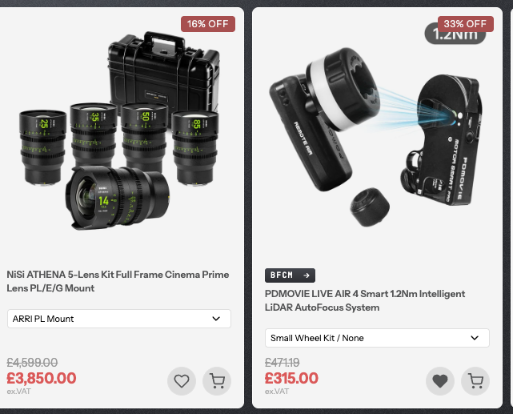
改后
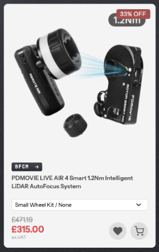
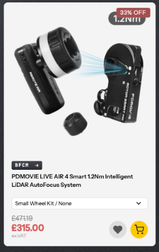
鼠标移上去
联合推广弹窗按钮（cgpj-btn）
目前线上没有打开的联合推广弹窗，按代码一起统一：主按钮黄色统一样式，深色 / 透明款只统一字体。
四、结账页
结账页按钮现在是深灰底白字（截图见盘点页）。改它要在后台「设置 → 结账 → 自定义」（checkout 编辑器），你的账号没有这个权限（打开显示「You need permission to view this feature」），要店主或有结账设置权限的人来改：
① 按钮颜色（Buttons / Primary button）背景
② 字体可以从 Shopify 字体列表里选（没有 Geist）；全大写、字距、划黑动画只有 Shopify Plus 能改
① 按钮颜色（Buttons / Primary button）背景
#FCC900、文字 #1C222D
② 字体可以从 Shopify 字体列表里选（没有 Geist）；全大写、字距、划黑动画只有 Shopify Plus 能改
五、不动的
Shop Pay / PayPal / Google Pay 快捷支付按钮（品牌规定）；卡片上的「N Bundles」红色小标签（是优惠标签，不是购买按钮）；首页横幅 Shop Now；数量、款式、收藏爱心等。
六、改了什么 / 怎么还原
主题只加了一个新文件
还原：把 theme.liquid 里这 3 行删掉（或推回改前那份）就全部恢复。字体文件 45KB，以后每页都会加载（侧边购物车每页都有）。
assets/cgp-buy.css，并在 layout/theme.liquid 的 </head> 前加了 3 行（声明 Geist 字体 + 引入这个样式文件）。其他功能的文件一个都没改。还原：把 theme.liquid 里这 3 行删掉（或推回改前那份）就全部恢复。字体文件 45KB，以后每页都会加载（侧边购物车每页都有）。